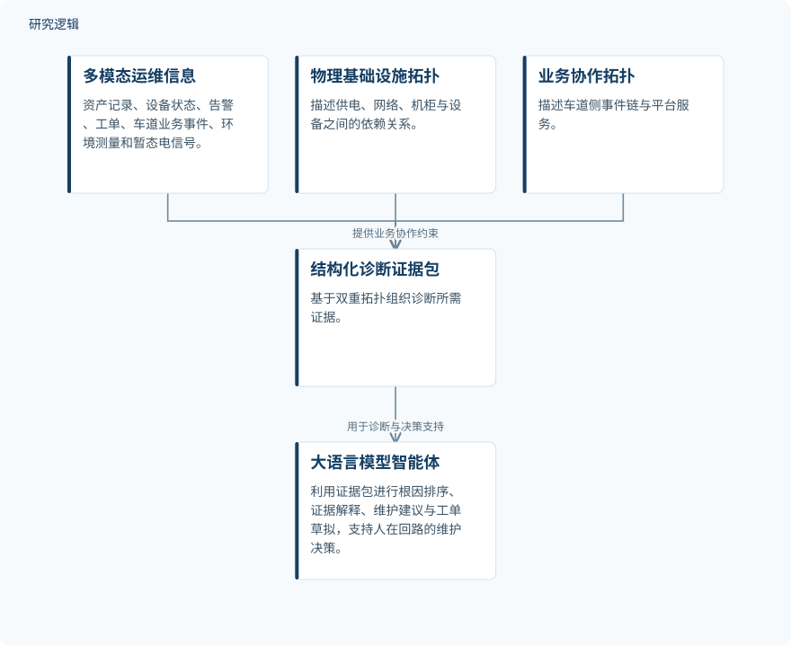

摘要解读
面向高速公路机电系统故障诊断的拓扑约束多模态大语言模型智能体
A topology-constrained multimodal LLM agent for fault diagnosis in highway electromechanical systems
解读更新 2026-10-17 11:42 · 依据公开摘要整理，未核验全文细节
高速公路机电系统出现服务中断，原因可能跨越供电、网络、设备与业务协作。本文提出用双重拓扑组织多模态证据，再交由大语言模型智能体辅助诊断，值得关注的是如何让诊断解释受到明确证据的约束。
文章目录
服务中断背后，故障可能跨越设备边界
高速公路机电系统包含车道控制器、车牌识别摄像机、栏杆机、交换机、UPS、配电柜及平台等异构设备。同样表现为服务中断，背后可能是供电退化、网络不稳定、单设备故障，也可能涉及设备协作错误或系统配置变化。诊断因此不仅要识别异常设备，还要辨析设备依赖与业务协作关系。
用物理依赖与业务协作组织诊断证据
框架整合资产记录、设备状态、告警、工单、车道业务事件、环境测量和暂态电信号，并构建互补的双重拓扑：物理基础设施拓扑描述供电、网络、机柜和设备依赖；业务协作拓扑描述车道侧事件链与平台服务。
系统基于双重拓扑构建结构化诊断证据包，供大语言模型智能体开展根因排序、证据解释、维护建议和工单草拟。摘要将其定位为人在回路的维护决策支持，而非无需人工参与的自动维修系统。
依据摘要整理的双拓扑诊断流程


仅概括摘要明确描述的证据组织与智能体任务，不代表论文原图，也不补充未报告的实现细节。
下载 SVG图示关系说明
实线表示相邻阶段的信息流，虚线表示跨阶段联系或反馈。
多模态运维信息 → 结构化诊断证据包：提供运维证据；物理基础设施拓扑 → 结构化诊断证据包：提供物理依赖约束；业务协作拓扑 → 结构化诊断证据包：提供业务协作约束；结构化诊断证据包 → 大语言模型智能体：用于诊断与决策支持
摘要报告分类、定位与建议接受率改善
研究在匿名化的高速公路机电运维数据集上开展实验。摘要报告，相比规则诊断、纯文本检索增强生成、结构化分类器和图分类器，该方法改善了故障分类、根因定位和建议接受率。
作者据此认为，拓扑约束与多模态证据打包能够以显式证据约束诊断推理，提高智能体在该运维场景中的可靠性。不过，摘要未给出具体指标数值，无法据此判断提升幅度；建议接受率也不能直接等同于维修成功率。
样本规模、比较公平性与验证边界仍待核对
当前解读仅依据完整摘要。摘要未交代数据规模、故障类别分布、数据划分方式，以及不同道路或设备条件的覆盖范围；比较方法的配置、评价指标定义和统计不确定性也未说明，因此尚不能判断比较的公平性与结果的泛化边界。
摘要同样不足以确认双重拓扑与证据打包各自的贡献，以及人在回路如何实施、建议接受率如何统计。这些是进一步阅读时需要核对的内容，并不意味着论文未开展相应分析。
阅读启发：关注证据怎样约束根因判断
阅读启发：本文值得追问的不只是智能体能否生成诊断文本，而是物理依赖和业务事件链怎样进入证据包，又怎样支持或限制根因排序。进一步阅读可重点关注证据冲突如何处理、诊断解释能否追溯到输入记录，以及人工如何审核维护建议，避免把建议接受直接理解为故障已解决。
以上为本站阅读启发与建议，不是论文已验证的结论。